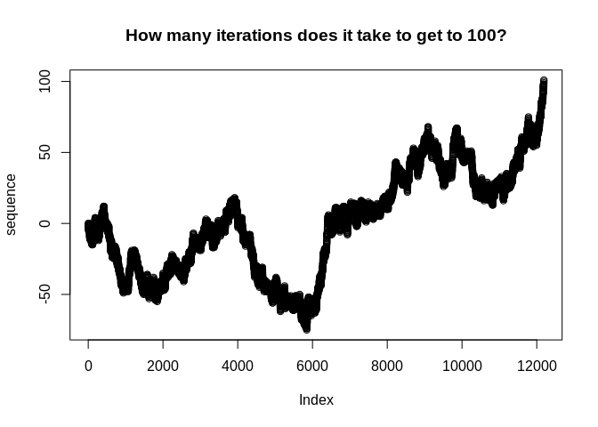

The {peruse} package is aimed at making it easier to generate irregular sequences that are difficult to generate with existing tools.
The heart of {peruse} is the S3 class Iterator. An Iterator allows the user to write an arbitrary R expression that returns the next element of a sequence of R objects. It then saves the state of the Iterator, meaning the next time evaluation is invoked, the initial state will be the result of the previous iteration. This is most useful for generating recursive sequences, those where each iteration depends on previous ones.
The package also provides a simple, tidy API for set building, allowing the user to generate a set consisting of the elements of a vector that meet specific criteria. This can either return a vector consisting of all the chosen elements or it can return an Iterator that lazily generates the chosen elements.
Installation
You can install the released version of peruse from CRAN with:
install.packages("peruse")And the development version from GitHub with:
# install.packages("devtools")
devtools::install_github("jacgoldsm/peruse")Example
Negative Binomial Investigation
Suppose we want to investigate the question of how many trials it takes for a random walk with drift to reach a given threshold. We know that this would follow a Negative Binomial distribution, but how could we use the Iterator to look at this empirically in a way that easily allows us to adjust the drift term and see how the result changes? We might do something like this:
p_success <- 0.5
threshold <- 100
expr <- "
set.seed(seeds[.iter])
n <- n + sample(c(1,-1), 1, prob = c(p_success, 1 - p_success))
"
iter <- Iterator(expr, list(n = 0, seeds = 1000:1e6), n)
sequence <- yield_while(iter, "n <= threshold")
plot(sequence, main = "How many iterations does it take to get to 100?")
How would we apply this same function to a grid of probabilities? We could do something like this:
probs <- seq(0.5,0.95, by = 0.01)
exprs <- rep(NA, length(probs))
num_iter <- rep(NA, length(probs))
threshold <- 20
seeds <- 1000:1e6
for (i in seq_along(probs)) {
exprs[i] <- glue::glue(
"
set.seed(seeds[.iter])
n <- n + sample(c(1,-1), 1, prob = c({probs[i]}, 1 - {probs[i]}))
"
)
iter <- Iterator(exprs[i],
list(n = 0),
yield = n)
num_iter[i] <- length(yield_while(iter, "n <= threshold"))
}
plot(x = probs,
y = log(num_iter),
main = "Probability of Success vs How long it takes to get to 20 (Log Scale)",
xlab = "Probability of Success",
ylab = "Log Number of Iterations")
This illustrates a few useful features of Iterators:
We can use environment variables in either our expression or our
whilecondition to represent constants. In this case,thresholddoesn’t change between iterations or between parameters. If you are creating manyIterators, it can be faster to use environment variables, since you don’t have to make a new object for each newIterator.We can use
glue::glue()to generate a range of expressions that we can then fill in to create anIteratorwith a range of parameters.We can refer to the current iteration number in
yield_while(),yield_more(), or their silent variants with the variable.iter.
Collatz Sequence
A Collatz sequence is a particular sequence of natural numbers that mathematicians think always reaches 1 at some point, no matter the starting point. We can’t prove that one way or the other, but we can create an Iterator that lazily generates a Collatz sequence until it reaches 1:
library(peruse)
expr <- "if (n %% 2 == 0) n <- n / 2 else n <- n*3 + 1"
# Collatz generator starting at 50
collatz <- Iterator(result = expr,
initial = list(n = 50),
yield = n)
yield_while(collatz, cond = "n != 1L")
#> [1] 25 76 38 19 58 29 88 44 22 11 34 17 52 26 13 40 20 10 5 16 8 4 2 1Random Walk with Drift
Random Walks, with or without drift, are one of the most commonly used type of stochastic processes. How can we simulate one with {peruse}?
expr <- 'n <- n + sample(c(-1L, 1L), size = 1L, prob = c(0.25, 0.75))'
rwd <- Iterator(result = expr,
initial = list(n = 0),
yield = n)
Value <- yield_while(rwd, "n != 50L & n != -50L")
plot(Value, main = "The Value of the Iterator after a Given Number of Iterations")
Here, we can see that seq gets to 50 after about 100 iterations when it is weighted 3:1 odds in favor of adding 1 over adding -1 to the prior value.
Primes
How about generating all the prime numbers between 1 and 100? We can easily do that with the set-builder API:
2:100 %>%
that_for_all(range(2, .x)) %>%
we_have(~.x %% .y != 0)
#> [1] 2 3 5 7 11 13 17 19 23 29 31 37 41 43 47 53 59 61 67 71 73 79 83 89 97In the equation, we can reference the left-hand side of the equation with the positional variable .x, and the right-hand side (that is, the argument in that_for_all()) with .y. The equation can be anything recognized as a function by purrr::as_mapper().
But how about if we want to generate the first 100 prime numbers? We don’t know the range of values this should fall in (well, mathematicians do), so we can use laziness to our advantage:
primes <- 2:10000 %>%
that_for_all(range(2, .x)) %>%
we_have(~.x %% .y != 0, "Iterator")
primes_2 <- clone(primes)The first prime number is
yield_next(primes_2)
#> [1] 2And the first 100 are:
sequence <- yield_more(primes, 100)
sequence
#> [1] 2 3 5 7 11 13 17 19 23 29 31 37 41 43 47 53 59 61
#> [19] 67 71 73 79 83 89 97 101 103 107 109 113 127 131 137 139 149 151
#> [37] 157 163 167 173 179 181 191 193 197 199 211 223 227 229 233 239 241 251
#> [55] 257 263 269 271 277 281 283 293 307 311 313 317 331 337 347 349 353 359
#> [73] 367 373 379 383 389 397 401 409 419 421 431 433 439 443 449 457 461 463
#> [91] 467 479 487 491 499 503 509 521 523 541Here, we use clone() to create an identical Iterator to primes that can be modified separately.